프런티어 개발자란 누구인가요
발표자는 AWS에서 Kiro라는 에이전틱 코딩 도구를 만드는 엔지니어예요. 지난 3년 동안 AI 코딩 도구가 어떻게 바뀌어 왔는지를 네 단계로 나눠요.
| 단계 | 하는 일 | 발표자의 체감 |
|---|---|---|
| 인라인 코드 완성 | 다음 줄, 다음 함수를 대신 써 줘요 | 세 단계를 다 합쳐도 10~20% 정도 빨라졌다고 해요 |
| 채팅 | 내 코드에 관해 질문해요 | |
| 바이브 코딩 | 대화로 코드를 통째로 만들어요 | |
| 프런티어 개발 | 에이전트가 오래, 여러 개 동시에 일해요 | 사내 파일럿 중앙값 4.5배, 일부 팀은 10배 이상 |
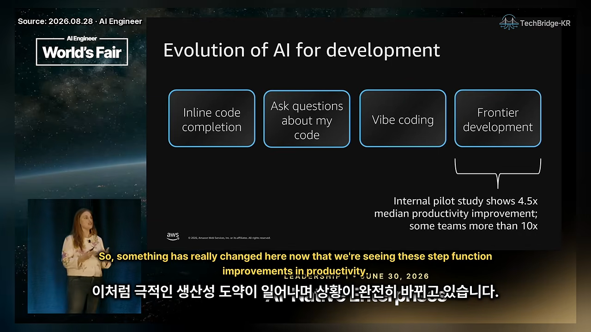
프런티어 개발자의 세 가지 행동
아마존에서 '프런티어 개발자'라고 부르는 사람들은 세 가지가 달라요. 결과물 코드의 1~2%만 손으로 써요. 에이전트에게 한 번 맡기면 몇 시간씩 혼자 돌게 두고 거의 끼어들지 않아요. 그리고 여러 에이전트를 병렬로 돌려서 쌓인 작업을 쉬지 않고 처리해요.
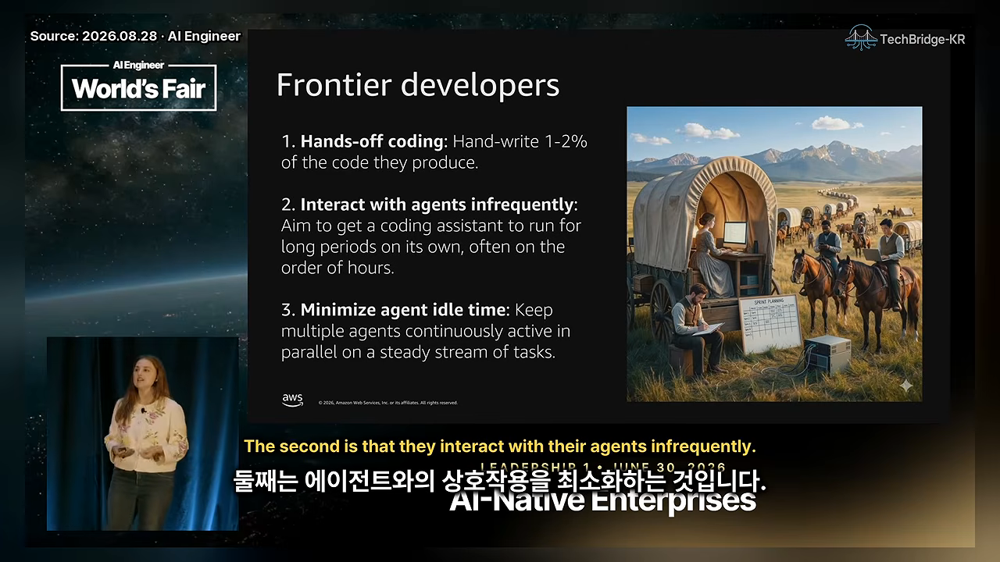
처음 증명한 두 팀: Bedrock Mantle과 Prime Video
아마존 안에서 이 방식이 통한다는 걸 처음 보여 준 건 두 팀이에요. 둘 다 놀라운 숫자를 냈지만, 둘 다 '평범한 팀도 될까?'라는 질문을 남겼어요.
선도 팀: Amazon Bedrock Mantle
Bedrock은 Claude, GPT 같은 LLM을 호스팅하는 AWS 서비스예요. 팀은 새 추론 데이터 플레인을 만들어야 했고, 원래 30명이 18개월 걸린다고 봤어요. 새 시스템을 짓고 고객과 모델을 옮겨야 하는 큰일이었죠. 실제로는 6명이 Kiro로 76일 만에 끝냈어요.
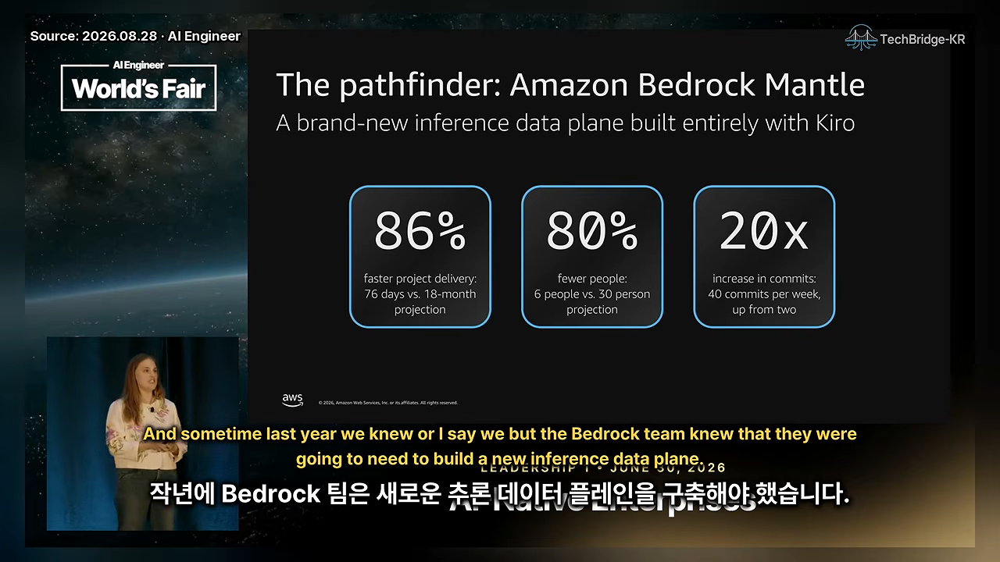
문제는 그 6명이 누구였느냐예요. 분산 시스템과 LLM 구조의 전문가들이었고, 직급으로 보면 회사 최고 수준이었어요. 이야기는 사내에 빠르게 퍼졌지만 많은 팀에게는 따라 할 수 없는 사례로 받아들여졌어요.
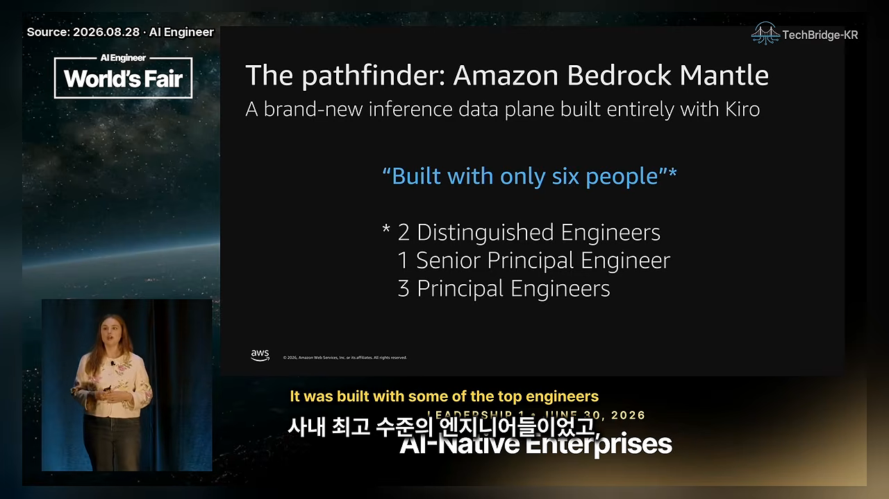
스프린트: Prime Video Financial Systems
두 번째 실험은 Prime Video 조직의 10일 스프린트예요. 이번에도 엔지니어 6명을 한 방에 모아 Kiro를 마음껏 쓰게 했어요. 10일 동안의 진척을 근거로 다시 잡은 일정은 90주에서 24주로 줄었어요.
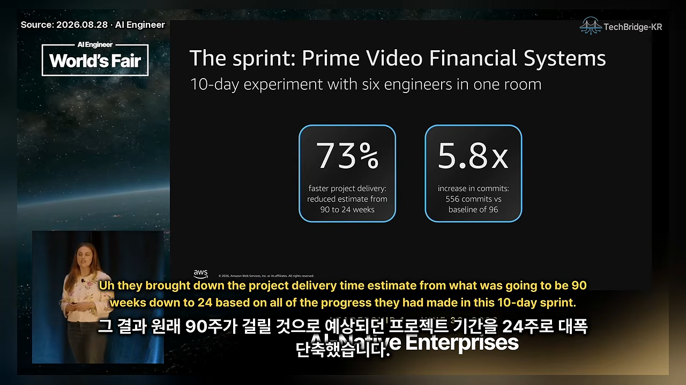
이번에도 단서가 붙어요. 이 6명은 온콜이 없었고 회의도 적었어요. 게다가 시니어 엔지니어가 앞선 3주 동안 작고 범위가 분명한 작업과 상세 요구사항을 미리 만들어 뒀어요. 엔지니어의 평범한 하루와는 다른, 한 시점의 구조화된 실험이었던 셈이에요.
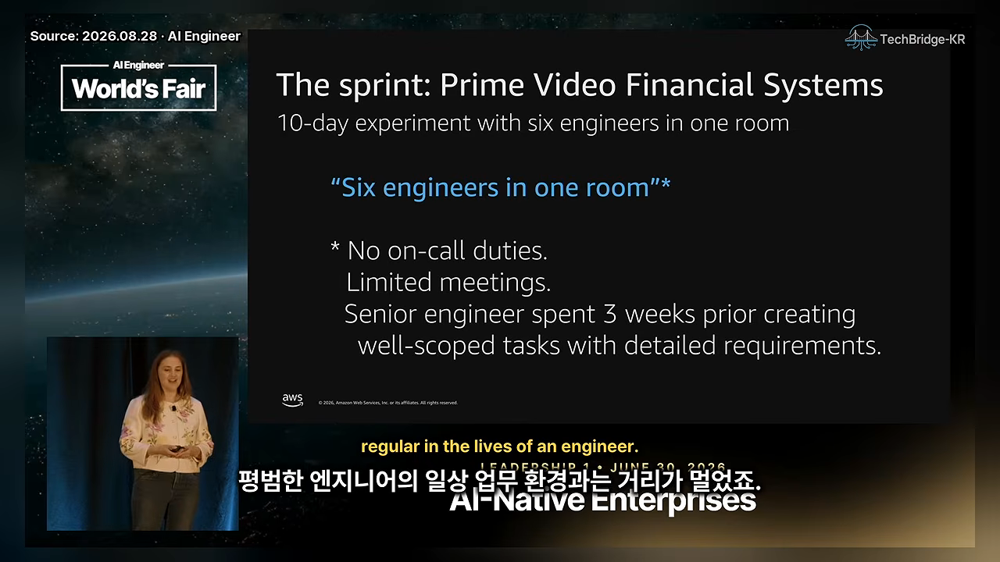
| Bedrock Mantle | Prime Video 스프린트 | |
|---|---|---|
| 인원 | 6명 (30명 예상) | 6명 |
| 기간 | 76일 (18개월 예상) | 10일 실험 → 전체 일정 90주에서 24주로 |
| 커밋 | 주 2개 → 40개 (20배) | 96개 → 556개 (5.8배) |
| 단서 | 사내 최고 수준 엔지니어들 | 온콜 없음, 회의 적음, 3주간 미리 준비한 작업 |
평범한 50개 팀에서 갈린 차이
그래서 Amazon Stores(amazon.com 같은 리테일 사이트와 오프라인 매장을 포함하는 조직)가 더 구조화된 파일럿을 했어요. 신입부터 시니어까지 경력 분포가 평범한 50개 팀을 골랐어요. 새로 짓는 시스템이 아니라 기존 코드베이스, 즉 브라운필드 시스템을 다루는 팀들이었어요.
생산성 지표도 바꿨어요. 커밋 수가 아니라 프로덕션 배포 속도, 곧 변경을 얼마나 빨리 고객에게 내보내느냐를 봤어요.
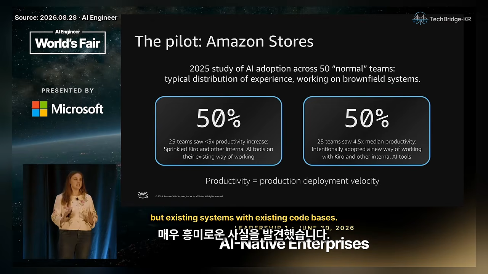
절반은 3배 미만에 그쳤고, 나머지 절반은 중앙값 4.5배, 일부는 10배 넘게 올랐어요. 90%의 팀이 Kiro와 다른 사내 도구를 썼으니 도구 차이가 아니었어요. 성과를 낸 팀은 일하는 방식을 의도적으로 바꿨고, 나머지는 기존 방식 위에 도구를 살짝 뿌렸을 뿐이었어요.
It wasn't about the tools, it was about the way that they worked.
도구의 문제가 아니라 일하는 방식의 문제였어요.
— 영상 06:45
발표자는 이게 자기에게도 큰 깨달음이었다고 해요. AI가 약속한 만큼 빨라졌다고 느끼지 못한 이유가 여기 있었다는 거예요. 파일럿 팀과 앞의 두 팀을 인터뷰해서 찾은 공통점이 다섯 가지 습관이에요. 한 번의 스프린트가 아니라 매일 쌓아야 하고, 만드는 데 시간이 걸려서 '습관'이라고 불러요.
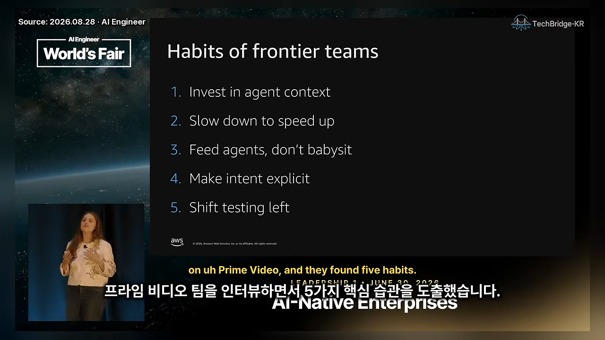
습관 1·2: 컨텍스트에 투자하고, 일부러 느려지기
습관 1. 에이전트 컨텍스트에 투자해요
사람은 머릿속 지식을 Slack 대화, 온보딩 멘토, 코드 리뷰, 스탠드업, 스프린트 계획으로 서로에게 넘겨요. 에이전트는 이 경로에 없으니, 성과를 낸 팀은 이걸 전부 글로 적었어요.
습관은 두 방향이에요. 에이전트가 실수하거나 내가 원한 방식과 다르게 하면 "스킬 파일, 스티어링 파일에 뭐가 빠졌지?"를 물어요. 반대로 새 모델이 나올 때마다 "이게 아직 필요한가, 컨텍스트만 부풀리는 건 아닌가?"를 물어요. 발표자는 Sonnet 3.7 시절에는 모델의 버릇 때문에 '하지 마' 규칙을 잔뜩 넣어야 했지만, Opus 4.5 이후로는 그럴 일이 많이 줄었다고 해요.
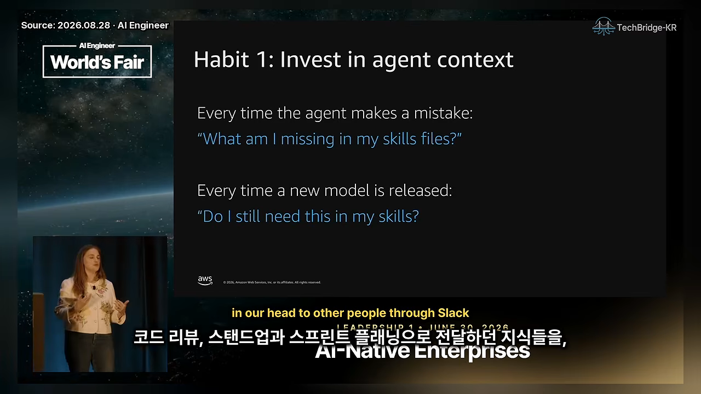
습관 2. 빨라지려면 먼저 느려져요
인터뷰한 거의 모든 팀이 새 방식을 들인 직후 생산성이 오히려 떨어졌다고 했어요. 하키스틱 곡선을 그리기 전에 의도적인 엔지니어링 작업이 먼저 필요하기 때문이에요. 특히 브라운필드 코드베이스에서는 에이전트가 일할 수 있는 바탕부터 깔아야 해요.
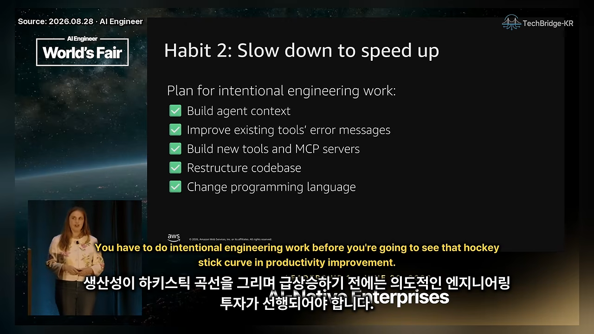
팀들은 컨텍스트를 쌓고, 기존 도구의 에러 메시지를 고쳐 모델이 실패 원인을 알 수 있게 했어요. 새 도구와 MCP 서버를 만들고, 에이전트가 길을 찾기 쉽게 코드베이스 구조를 바꿨어요. 프로그래밍 언어를 바꾼 팀도 있어요. Python이나 JavaScript는 타입이 없어 테스트가 어렵고 컴파일 에러도 없으니, 모델이 추측한 결과를 그대로 돌려줘요. 그래서 TypeScript로 옮기는 팀이 있고, 아마존 안에서는 컴파일러 에러 메시지가 친절한 Rust가 인기를 얻고 있대요. 발표자는 언어 교체가 필수는 아니라고 덧붙여요.
습관 3~5: 먹이 주기, 의도 명시, 테스트 앞당기기
습관 3. 에이전트를 돌보지 말고 먹이를 줘요
발표자가 몇 배 향상의 핵심으로 꼽는 습관이에요. 하루 종일 에이전트와 대화를 주고받으면 사람이 계속 루프 안에 있어요. 코드가 생성되는 30초에서 1분을 지켜보느라 다른 일을 못 하고, 에이전트를 병렬로 돌리기도 어려워요. 그래서는 4~5배 향상이 나올 수 없다는 거예요.
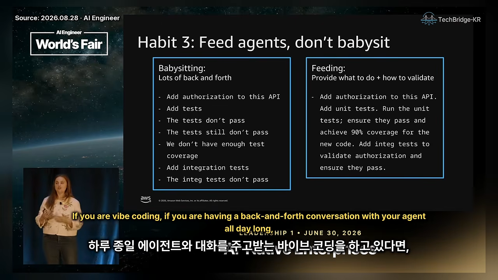
| 돌보기 (Babysitting) | 먹이 주기 (Feeding) | |
|---|---|---|
| 지시 방식 | "인증 추가해" → "테스트 추가해" → "테스트가 안 돼" → "커버리지가 부족해"… | "인증 추가하고, 단위 테스트를 돌려 통과와 커버리지 90%를 확인하고, 통합 테스트도 추가해 통과시켜" |
| 사람의 위치 | 매 단계 루프 안 | 기준을 넘었을 때만 확인 |
| 에이전트 | 시키는 것만 해요 | 스스로 검증하고 고쳐요 |
핵심은 할 일과 함께 검증 방법을 주는 거예요. 그래야 에이전트가 스스로 고치고, 컴파일되고 테스트를 통과하고 커버리지가 충분할 때만 돌아와요. 다음 단계는 이 기준을 스티어링 파일에 넣어서 매번 말하지 않아도 지키게 하는 거예요.
습관 4. 의도를 먼저 분명히 해요
바이브 코딩에서 흔한 흐름은 이래요. 막연한 프롬프트를 주고, 에이전트가 코드를 잔뜩 만들고, "그게 아니라 이런 뜻이었어", "그렇게 만들려던 게 아니야"를 반복해요. 의도 자체가 틀린 상태로 코드를 고치는 건 비효율적이에요.
아마존은 스펙 주도 개발을 많이 쓰고, 이를 Kiro 제품에도 넣었어요. 모호하고 복잡한 기능이면 엔지니어들이 사양서를 먼저 써요. 사양서는 모델이 초안을 써도 돼요. 코드베이스 곳곳에 흩어진 변경보다 문서 하나를 두고 의견을 주고받는 게 훨씬 쉽기 때문이에요.
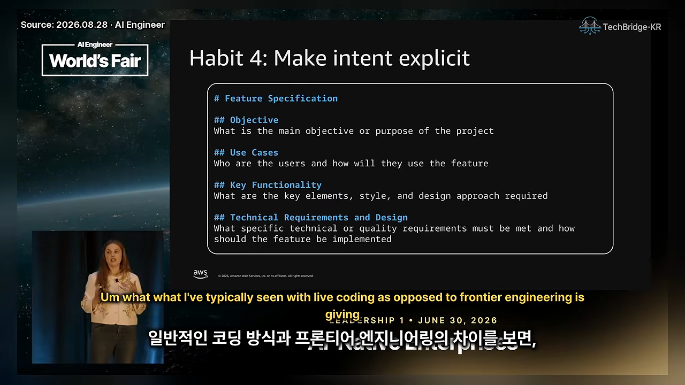
습관 5. 테스트를 앞으로 당겨요
에이전트가 몇 시간씩 혼자 일하려면 빠른 피드백 루프가 있어야 해요. 에이전트는 실수하겠지만, 맞는 신호만 있으면 스스로 고치면서 오래 일할 수 있어요. 그래서 팀들은 린터, 단위·통합·성능·보안 테스트를 더했어요. 원래 했어야 할 기본기지만, 발표자는 이제야 투자 대비 효과가 충분히 커졌다고 봐요.
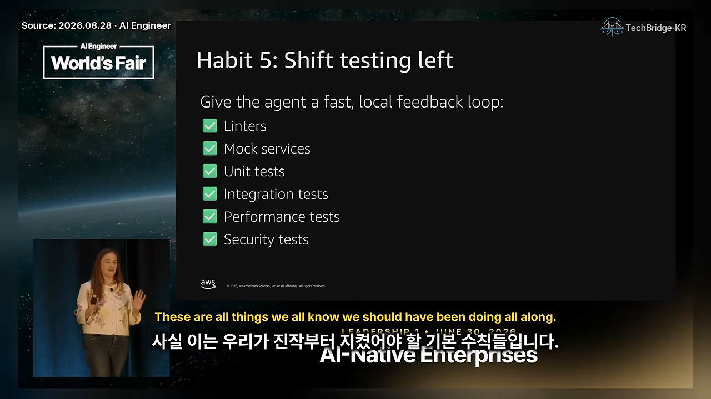
특히 눈에 띄는 건 목 서비스예요. 예전 통합 테스트는 실제 서비스까지 엮어서 끝에서 끝까지 확인했어요. 이제는 결정적인 응답을 주는 목 서비스를 로컬에 두고, 클라우드에 연결하지 않고 노트북에서 전부 돌려요. 피드백이 빠를수록 에이전트가 더 많은 루프를 돌 수 있어요.
아직 어려운 것: 번아웃과 조직 변화
발표자는 다섯 습관을 다 지키면 끝이라고 말하지 않아요. 아직 초기 수용 단계이고 팀들도 방법을 찾는 중이에요. 남은 어려움을 둘로 나눠요.
번아웃
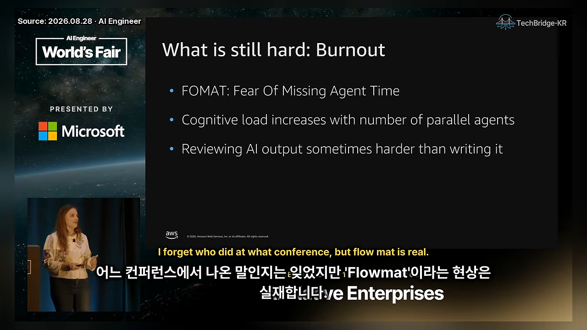
- FOMAT. 에이전트가 놀고 있는 시간을 아까워하는 마음이에요. 밤새 돌 완벽한 프롬프트를 짜느라 늦게까지 깨어 있는 엔지니어들이 생겼어요.
- 인지 부하. 병렬 에이전트가 늘수록 터미널 탭 사이를 계속 오가야 해요.
- 리뷰 부담. AI 결과물을 리뷰하는 게 직접 쓰는 것보다 어려울 때가 많아요. 남의 코드를 리뷰해 온 시니어보다, 그 근육이 아직 없는 주니어에게 더 무겁게 느껴져요.
조직 변화
엔지니어 한 사람의 하루만 바뀌는 게 아니라 조직도 바뀌어야 해요. 발표자가 꼽은 실수는 세 가지예요.
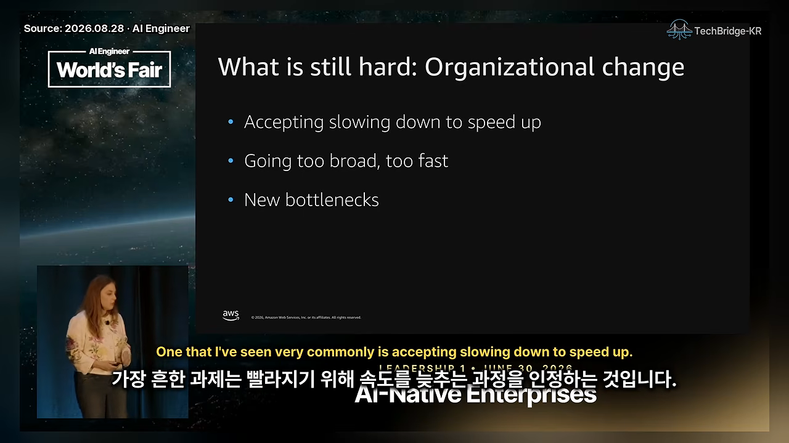
첫째는 느려지기를 받아들이지 못하는 거예요. 발표자 자신도 "AI 도구가 있는데 왜 더 빨라지지 않느냐"고 물은 적이 있다고 해요. 코드베이스와 팀 습관에 투자할 두 달은 필요해요. X에서 하루에 PR 20개를 낸다는 회사들을 보고 매달 기능 출시를 기대하면 안 된다는 거예요.
둘째는 너무 빨리, 너무 넓게 퍼뜨리는 거예요. 처음부터 모든 팀에 프런티어 팀이 되라고 했다면 선도 팀, 스프린트, 파일럿에서 얻은 교훈이 없었을 거래요. 아마존의 2026년 과제는 50개 팀에서 다음 2,000개 팀으로 넓히는 거예요. 서두르면 조직에 맞는 모범 사례와 컨텍스트를 찾을 시간 없이 헤매는 팀이 많아져요.
새 병목은 의사결정 속도
조직의 세 번째 과제는 새 병목이에요. 예전에는 코드를 손으로 쓰는 게 병목이었어요. 이제 코드는 한두 달이면 나오니, 만들지 말지 결정하는 시간과 출시 승인 과정이 가장 긴 일이 됐어요.
제품 하나에 9~12개월 걸리던 때는 결정에 2개월, 승인에 2개월이 들어도 전체에서 크게 티가 나지 않았어요. 지금은 그 4개월이 전체 일정을 좌우해요.
Frontier engineering teams spend more time making decisions than they do writing code.
프런티어 엔지니어링 팀은 코드를 쓰는 것보다 결정하는 데 더 많은 시간을 써요.
— 영상 19:06
그래서 결정을 빨리 내릴수록 좋고, 되돌리기 쉬운 결정이라면 더욱 그래요.
발표자의 한 가지 결론
프런티어 엔지니어링은 일하는 방식을 의도적으로 바꾸는 일이에요. 어렵고 시간이 걸리며, 새 습관을 만드는 과정이에요. 엔지니어링 팀만이 아니라 조직 전체에 해당해요. 발표자는 AI 도구와 어떻게 일하는지 돌아보고, 사람이 루프에서 빠져나올 방법을 생각해 보라고 권하며 마무리해요.